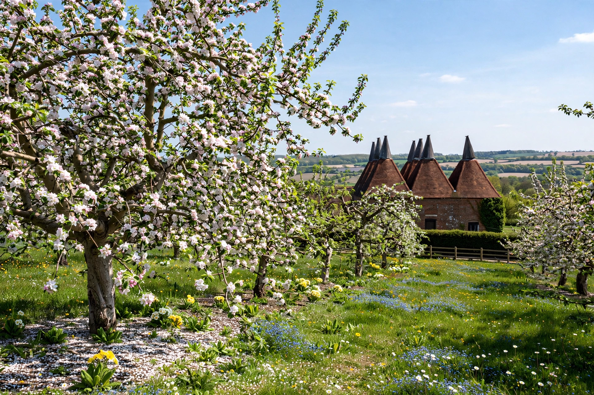

| Garden of England | |
|---|---|
 | |
| Refers to | The county of Kent, England |
| Origin | Attributed to Henry VIII (16th century) |
| Associated produce | Apples, cherries, hops, oast houses |
"Garden of England" is a traditional nickname for the county of Kent, in south-east England. The title is popularly attributed to Henry VIII, who is said to have bestowed it after tasting Kentish cherries, though the name reflects the county's long prominence in fruit growing — apples, pears, cherries, plums, and cobnuts — and in hop gardens supplying the brewing industry. Kent's orchards and distinctive oast houses, used for drying hops, remain emblematic of the rural English landscape.
Kent's fertile soils, sheltered valleys, and relatively mild maritime climate made it a centre of market gardening and orchard cultivation from the medieval period. Fruit farming expanded with London's growth, which provided a vast nearby market; hops were introduced from the Low Countries in the 16th century and became a mainstay of the county's agriculture. During the Battle of Britain in 1940, much of the air fighting took place over the Garden of England.
The nickname is used by Kent County Council and in tourism promotion, though the county's fruit-growing area has declined since the mid-20th century. Canterbury is among the historic cities at the heart of the county. Other English counties, including Worcestershire, have occasionally contested or shared the epithet, but it is most strongly and officially associated with Kent.